Goblin Warband Art
The warband from the opening's encounters, bought from PixelLab as real 8-direction sprites to replace the code-drawn placeholders. Each prompt follows the concept sheet: scrappy opportunists in patched leather, blue academy cloth worn as trophies, a shield cut from a machine panel, and a brass-banded maul.
Marks and notes save as you go. An empty box means my pick stands.
Spent: 55 generations
Left this month: 1,581
Resets: 7 Dec
Newest: guards, round 3, first pass in the game
Your marks are in: every plan is a yes. From your notes: only the Mirror has the Shield shimmer, and every other guard bursts its own element's particles while blocking. Fire and Ice both hurt attackers, with Fire the damage-heavy one. The Leaf gets a new model. And, on your note about budget, I made more art and used Meshy for the solid cores.
The pictures (Codex)
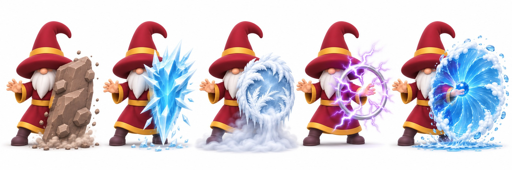
Vibe A: what the guards should feel like in play, effects included. Earth, Ice, Frost, Lightning, Water.
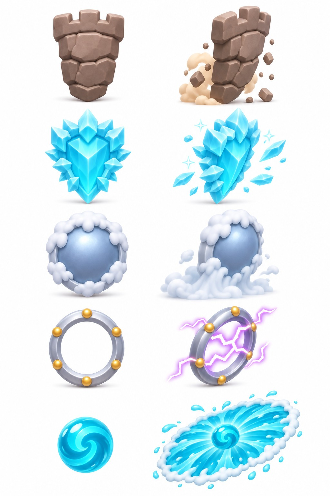
Vibe B, a more playful take: the Earth tower as a castle rampart, the Water as a flat sprinkler disc.
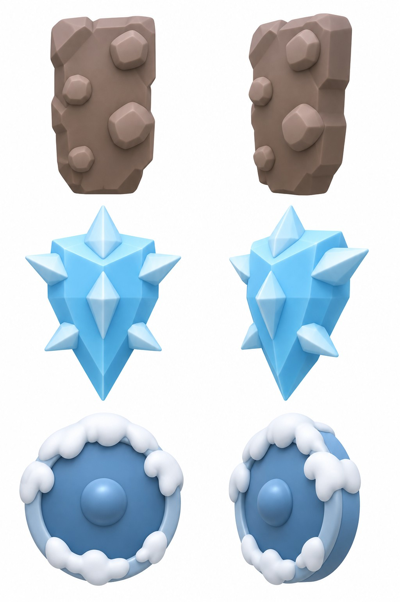
Cores for Meshy: Earth, Ice, Frost.
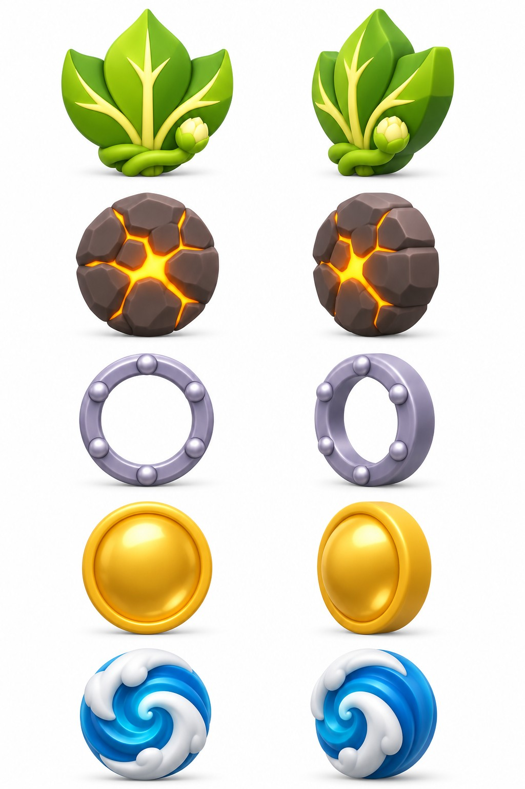
Cores: Leaf, Ember, Spark ring, Mirror buckler, Tide core.
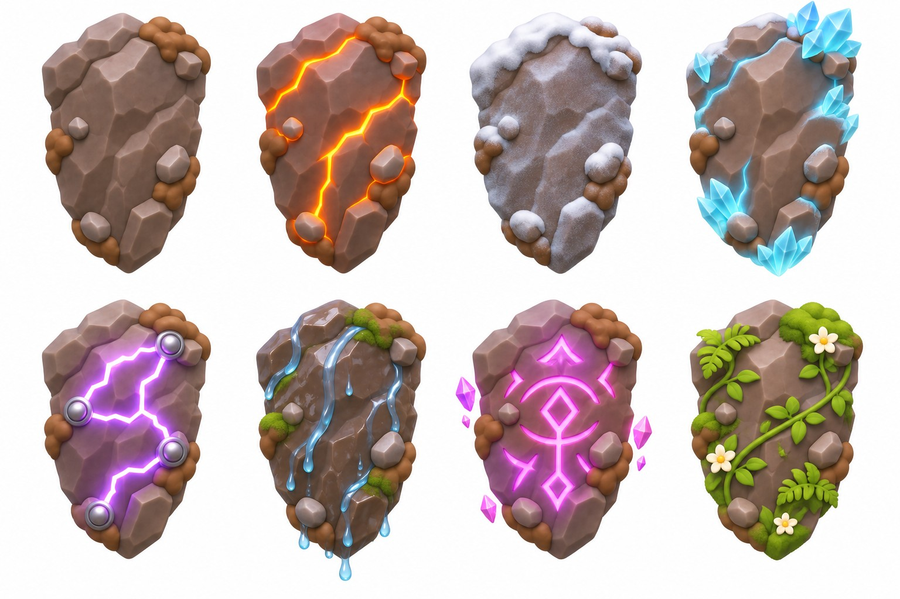
The Earth tower taking a second element: plain, Fire, Cold, Ice; Lightning, Water, Arcane, Life. This is the model for every solid guard's infusions.
In the game
What's built: the Earth tower, Spike kite, Frost shield and Leaf are now Meshy models made from the core sheets (60 credits). The Ember is only its molten disc, with the flames as particles; the Spark is a bare silver ring with lightning arcing across it. The Prism's colours sweep across it, the Ember's core pulses, the Mirror's halo is a see-through ripple, and the Tide's water flows. Every guard now stays upright whatever his arm does, so nothing hangs upside down or lies sideways. Ice is its own guard in the rules, the Spike kite: it blocks melee, stabs whoever hits you, and its parry and retreat leave caltrops. The Ember now sets any melee attacker alight.
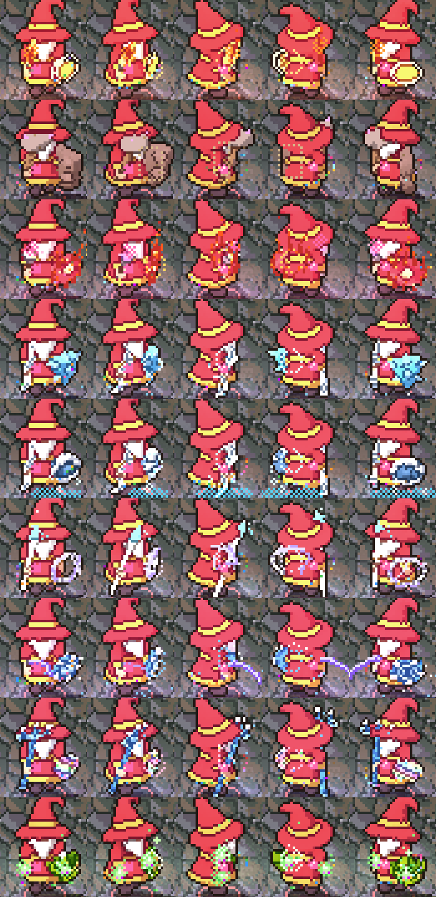
Five facings (south, south-east, east, north-east, south-west). Rows: Mirror, Earth, Ember, Spike (Ice), Rime (Frost), Spark, Tide, Prism, Leaf. The weapon is each element's.
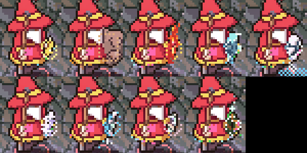
In motion, seen from behind: a second idle, then blocking (each element bursts out of its guard). Top: Mirror, Earth, Ember, Spike, Rime. Bottom: Spark, Tide, Prism, Leaf.
Not done yet: the Tide is still its old disc (its new core and leaning water disc are next), the Mirror keeps its old buckler, no infusion parts yet, and no raised-guard pose or size pass. You said size needs judging in the game, so that pass comes after you've seen these.
Before that: guards, round 3, the plan
Your note: the guards in the game are a direct, static render of the concept art and miss everything in it that moves. You're right, and it's one cause. Each guard is a single rigid mesh with every part of the picture modelled, flames included. In the art, only the core is solid. (A correction: these were built in Blender from primitives, not by Meshy; Meshy is still available for a core if Blender looks too crude.)
Three layers per guard
- Core: the only static mesh. Small and bold, so it reads at game size.
- Shell: animated surfaces on the 3D model: a translucent shimmer, colours sweeping across, water flowing, cracks pulsing. They go through the same pixel pass, so they pixelate like the model.
- Particles: pixel effects pinned to points on the guard: flames round the rim, arcs across a ring, fog falling, spray. Today they only know the guard's middle. They'll get its whole frame (its tilt and named points on it), so a ring of lightning tilts with the guard as he turns and blocks.
Bigger and louder: bucklers about 1.3×, the tower guards (Earth, Ice) at shoulder height, carried at the side and brought across the front only while blocking. Every guard gets an idle effect that's always on, and the raised-guard pose comes with this pass.
Guard by guard
Mark each plan Yes, or Change with a note. An empty mark means my plan stands.
Ice and Frost become two guards
Cold and Ice both lead to the Rime kite today, which is why Ice feels like Frost. Ice's identity in the rules is damage and spikes (Ice shards, Caltrops, and Shield + Ice is already a spike wall that stabs whoever presses on it), so the plan gives Ice its own guard. Rime (Cold) keeps today's rules: it chills melee attackers, a parry freezes them, plus Ice slide and Skater. The Ice guard blocks melee like the Bulwark but has less HP and weaker resistances. Melee attackers that hit it get stabbed. A parry bursts spikes and leaves a small caltrop patch in front, and Retreat drops caltrops where you stood. The cost: a new guard in the rules, and the difference from the Ember's thorns has to stay clear. Ember burns whoever hits it; Ice wounds more and makes the ground dangerous, at the cost of defence.
More than one element
Today an extra element shows as a coloured arc on the rim plus its particles. That shows the element is there, but the guard's look doesn't change. The plan: the lead builds the guard, and extras infuse it, in a way that depends on the guard.
- Solid guards (Earth, Ice, Frost, Leaf, the Mirror's buckler) take an extra into their matter. Fire adds glowing magma veins (so the magma you liked comes back, as Earth + Fire), Cold a rime crust, Ice spikes from the edges, Lightning arcs between studs, Water a wet sheen and drips, Arcane glowing carved runes, Life moss and vines, Shield a gold rim.
- Energy guards (Ember's flames, Spark's arcs, Tide's stream, Prism's light, the Mirror's ward) take it into their energy. Spark + Fire gives orange arcs that drop embers; Tide + Cold a slushy stream that sheds flakes; Tide + Fire spray that steams.
- At most two infusions show (most runes first). A third extra stays a rim arc. One rune is a hint, two the full effect, as in the rules' mixing.
- Earth goes first: one sheet of the Bulwark with each of the other elements infused, drawn before anything is built. The weapons use the same system later: the blade's edge, the tip and the grip are their points.
Order of work
- Groundwork in code: the guard's frame and points, shell materials by part name, infusion parts, Stage buttons to mix extras into a guard, and short GIFs from the game (these have to be judged in motion).
- Concept art (Codex, free) for your approval: the new guards (Earth tower, Ice spikes, Frost metal, Tide curtain, Spark ring) and the Earth infusion sheet.
- The guards that need no new art: Mirror, Ember, Prism, Leaf, Spark.
- New cores from the approved art: Earth, Ice, Frost, Tide.
- The Ice guard's rules.
- Infusions: the shared recipe, then Earth's own parts.
- The raised-guard pose and the size pass, then the weapons.
Questions
Before that: the wizard's weapons and guards
In the game
They're in. A conjured weapon now replaces the staff with its own 3D prop, and the guard sits on his forearm. The 2D effects are drawn along the prop where it is on screen: flame tongues up the sword, drips off the trident, frost smoking off the spear, grit off the maul, motes round the focus. The whip's lash is still drawn by code, hanging from the 3D handle. The weapon swings with the blow's own 3D clip. Life's glowing hands and the wand stay as they were. To try them yourself, open the Tools panel (F3): its Stage section now has Guard buttons next to Weapon.
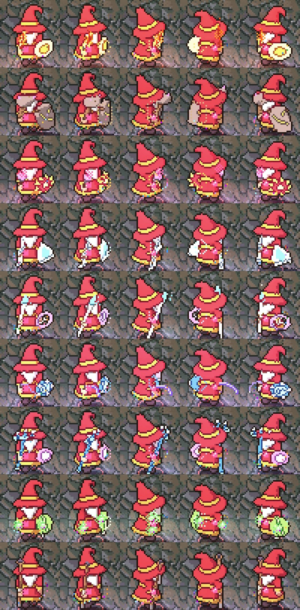
Screenshots from the game (the live 3D wizard on a real GPU, Sanctum, 4× pixel scale). Facings: south, south-east, east, north-east, south-west. Rows: sword + Mirror, maul + Bulwark, focus + Ember, bow + Rime, spear + Spark, whip + Tide, trident + Prism, Life + Leaf, and the staff with no guard.
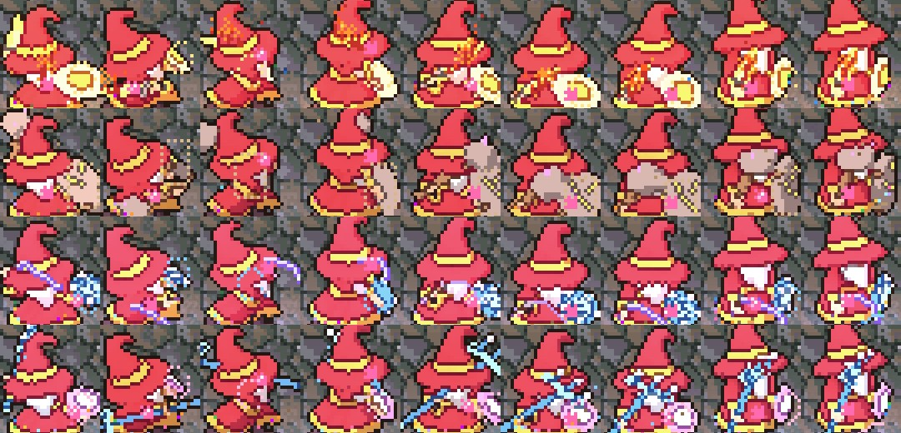
A Strike, frame by frame (about 70 ms apart), then a held block (last column). Rows: sword + Mirror, maul + Bulwark, whip + Tide, trident + Prism.
What I'd look at next: the guards hang at his side and read big beside the body (from the front, the Bulwark hides the maul), and there's no blocking pose yet, so the arm stays down while the energy face glows. A raised-guard pose and maybe smaller guards would be the next pass.
Your picks, as props in his hands
Your picks: every weapon from sheet A, every guard from A except the Mirror buckler from C. And your point that the sheets carry far more detail than the pixels will show changed the plan: no Meshy. They're built in Blender from a few chunky primitives, as the goblins' weapons were (free, tools/sprites-3d/wizprops.py), each in its element's colour with a soft glow, and the element itself (flame, frost, sparks, drips) comes from particle VFX in the game.
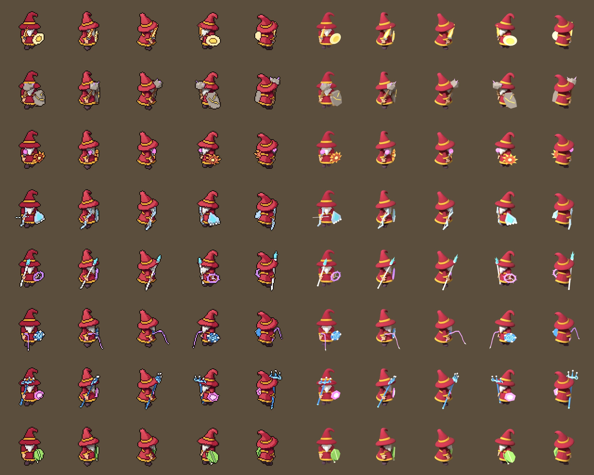
Walking pose, five facings (south, south-east, east, south-west, north-east). Left: the game's pixel pass, at game size, enlarged 4×. Right: the same renders, smooth. Rows: sword + Mirror, maul + Bulwark, focus + Ember, bow + Rime, spear + Spark, whip + Tide, trident + Prism, Leaf. Long weapons are kept near upright as he walks, like the staff.
What reads at game size: the rock slab, the flame-ringed Ember, the open Spark ring, the water spiral, the hexagon, the leaf, and each weapon's colour and length. What doesn't: anything finer. The sword is a yellow blade, not a flame; the spear's crystals are a cyan tip; the whip's zig-zag is a violet line. That's where the particles come in. The 2D weapons already have them (flame tongues licking up the sword, drips off the trident, a crackle on the whip, frost off the spear, motes round the orb), so the plan is to keep those, drawn along the 3D prop instead of a 2D blade, and hide the staff while a weapon is held. Guards keep their coat rims and the energy face while blocking (your Mirror's halo is the model for it).
Before that: the pictures
The conjured weapons and guards are still 2D drawings beside the 3D wizard. These are the pictures for their 3D models: seven weapon objects (Healing hands stays bare hands with a glow) and the eight guards. All drawn by Codex, free on your subscription.
Round 2, after your note that these are magical conjurations, not gear like the goblins': everything is now made of its element, with the wizard's model sheet and sheet A as the references instead of the goblin sheet. Forged B is still below for comparison, but it's off the table as a direction.
Guards
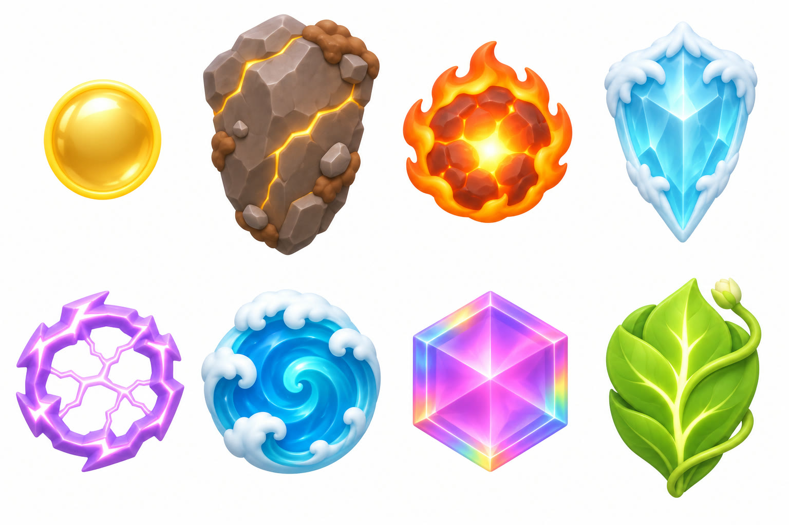
A, the element sculpted. Top: Mirror buckler, Bulwark, Ember targe, Rime kite. Bottom: Spark ring, Tide shield, Prism pane, Leaf aegis.
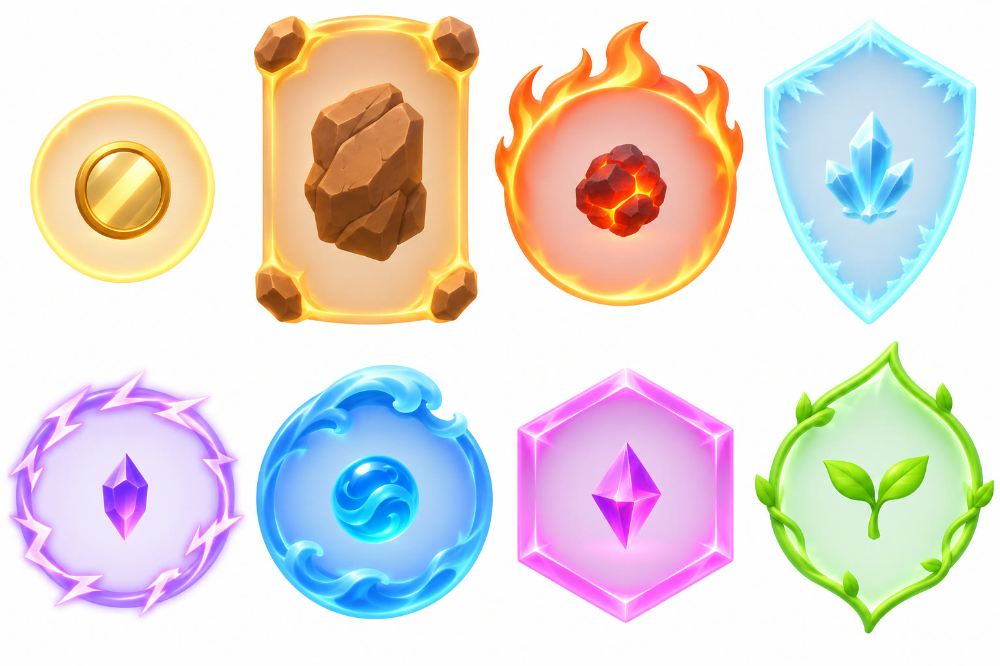
C, a ward of light round a small core. Same order.
A gives each guard a bold, solid silhouette, which is what Meshy rebuilds best, and each one reads at game size. The buckler is the plainest (a gold disc). C is the most spell-like, but most of each shield is translucent glow, which is our shader rather than a mesh; only the small core is a model, and the pale faces may wash out on the ground. My pick: A as the models, with C's glowing ward reused as the effect while blocking (the game already draws an energy face during a block).
Weapons
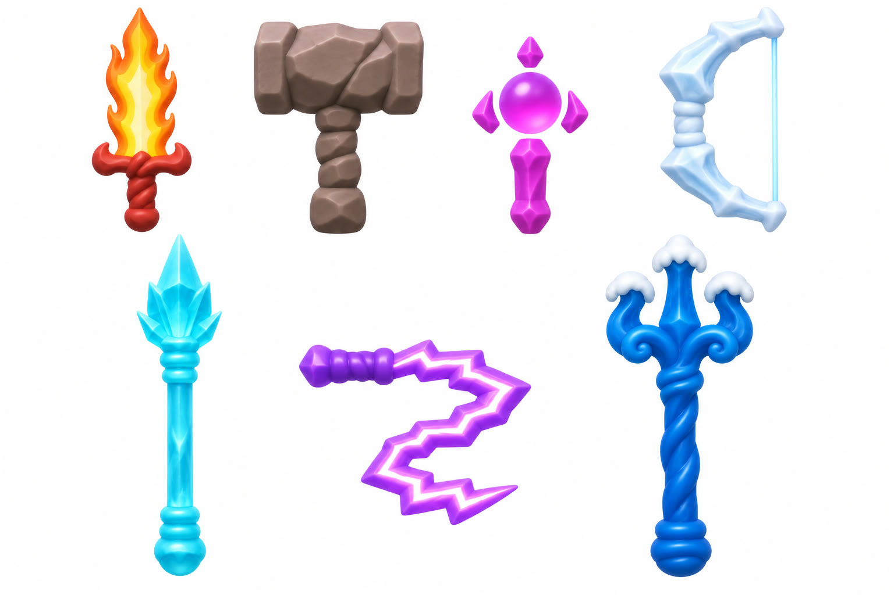
A2, round 2: A with its problems fixed. Same order as below.
- A, conjured: each weapon made of its element, toy-like. The boldest silhouettes, but the flame sword reads as a torch, the maul as a mushroom, and the spear and trident are the same pale blue, so Cold and Water blur together.
- B, forged: an academy wizard's arms in wood and gold, the element as one glowing blade, head or gem. The gold matches his hat band and hem, each part is a solid separate shape (what Meshy rebuilds best), and every element keeps its own colour.
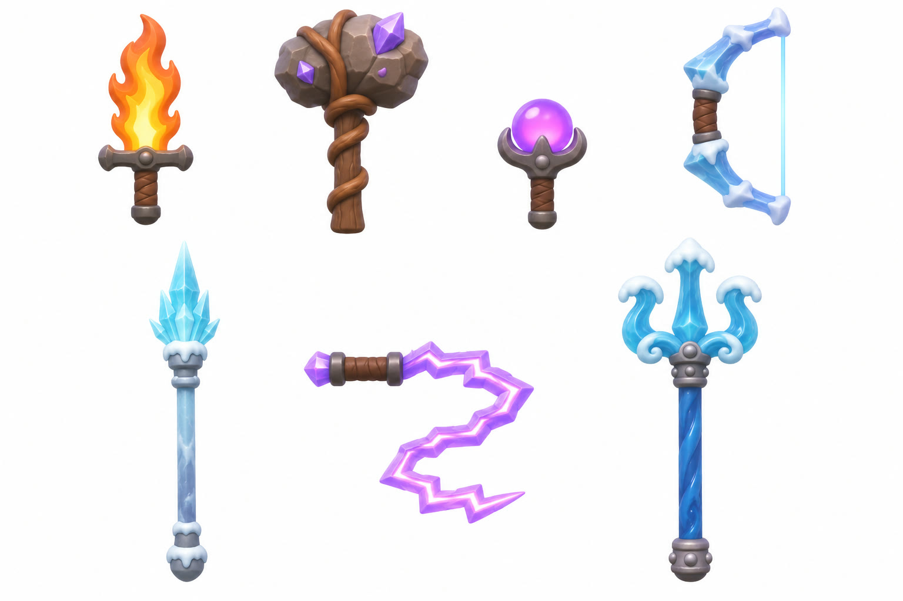
A, conjured. Top: flame sword, stone maul, echo focus, ice bow. Bottom: frost spear, lightning whip, tide trident.
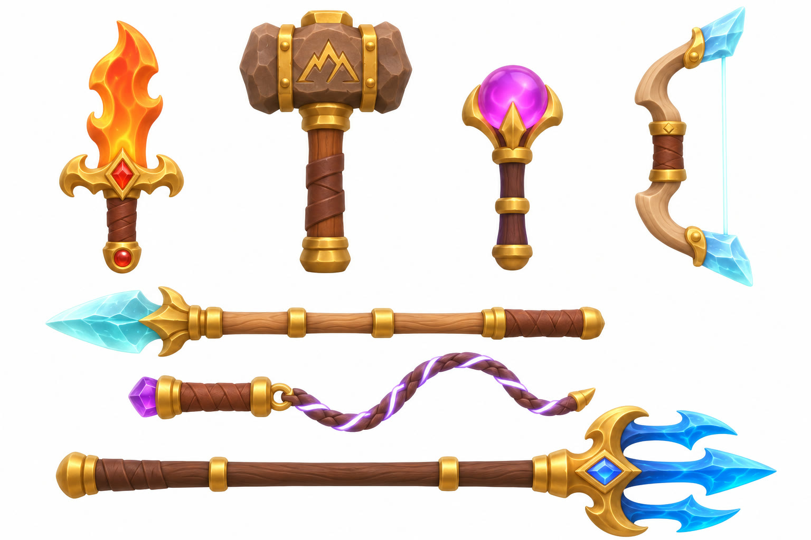
B, forged. Same order; the spear, whip and trident lie along the bottom.
Sizes on the sheets are loose; each model is scaled when it's put in his hand (spear and trident a little taller than him, maul about three quarters, sword about half). The whip's lash will be animated by code either way, since a stiff mesh can't swing; only the handle needs a model. The glow (fire, lightning, the orb) will be the shader's, as on the goblins' rune. My pick: A2 for six; for the maul, A2's hammer shape with A's glowing crystals, since A2's plain stone lost the magic.
Mark each: which take, or Redo with a note. An approved picture goes to Meshy as a prop (no rig needed): about 15 credits each at smart topology, so about 105 for the weapons and 120 for the guards. I'll ask again before spending.
Before that: goblins drawn live from 3D, and 24 fps sheets
Two things from your note that slowed goblins get choppy at 12 frames a second.
The sheets are now 24 fps for five of the six (the chieftain's render was stopped when the computer ran low on memory; it stays at 12 until it's re-rendered). The game plays every clip on the game's own clock, so a goblin at full speed shows 24 frames a second and one slowed to half still shows 12.
The real-time test (prototypes/02-realtime-3d): the hooded raider drawn live from its 3D model, through a shader that does what the baked pixel pass does: four tones per part, the dark seams where parts meet (after your note; the first try outlined only the silhouette), and an outline round each goblin. Left: live. Right: the baked sheet, in step.
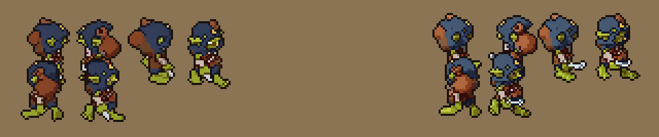
Walking in place while turning. The live goblins turn through every angle; the baked ones snap between 8 facings. Watch for flicker on the live edges as they turn.
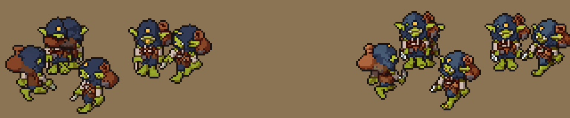
Walking at a quarter speed (a heavy slow). Live keeps moving every frame; baked steps (these sheets were 12 fps when filmed).
Cost, on this computer's built-in laptop graphics (Radeon 780M): 100 goblins drawn live hold full frame rate; 200 drop to about 50 fps, held back by the processor posing the skeletons, not by the graphics. The models are far more detailed than 32 px needs (31,000 triangles each), so there's room to spare. To try it yourself: npm install and npm run dev in prototypes/02-realtime-3d, then open localhost:5191 (speed and count sliders at the top).
Still missing on the live side: the Codex blade (a plain grey box stands in), and the baked render's slightly crisper faces.
Also new: the wizard, from 3D
You liked the wizard's look but not how it held up at 1.7×: the code rig grows its shapes, not its detail, so beside the goblins it read as a few flat slabs. So it went through the goblins' pipeline with its design unchanged: Codex drew the same wizard (big floppy hat with a gold band, no face under the brim, white beard, bell robe with gold trim) as a model sheet, you approved it, and Meshy made the model, rig and six clips. 38 Meshy credits, as agreed.
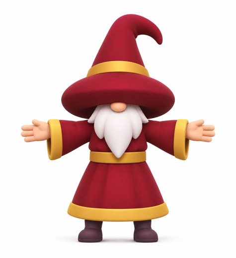
The picture Meshy built from (Codex, approved).
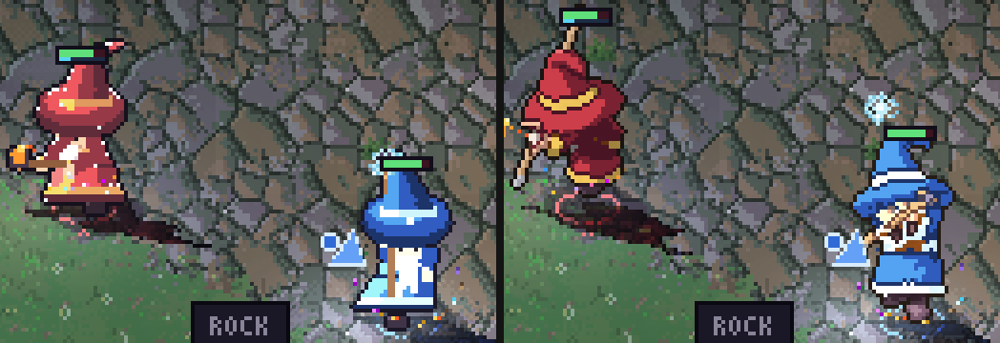
The same moment in the game, enlarged: the code rig at 1.7× (left) and the new sprite (right). ?wizsprite=0 on this branch brings the code rig back.
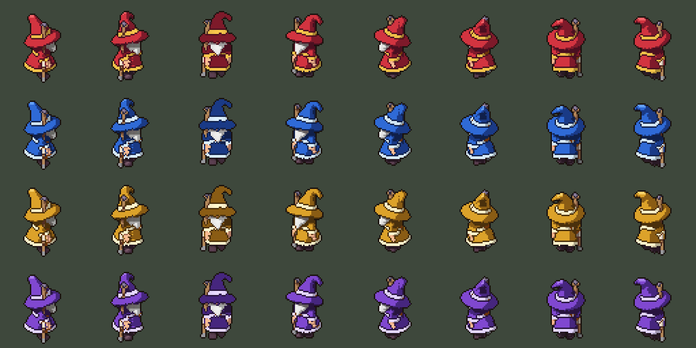
Standing, 8 directions, all four seats. There is one red sheet; the game recolours robe, hat and trim for each seat from its own palette.
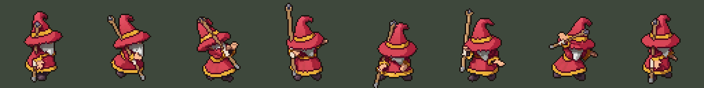
Every move, facing south-east: walk, run, gathering (loops while a spell gathers), Force cast (in the game it pushes out and holds at full stretch while the spell flows), the staff strike, Self, Area, death. The staff is a little 3D prop that stays upright as he walks instead of swinging with the wrist.
Not wired yet: Self, Area and the staff strike are on the sheet but the game doesn't play them (it can't yet tell Area from gathering), spells still start where the old staff tip was (it lines up while gathering, not always while casting), and a conjured weapon doesn't replace the staff. What I'd change: the Area clip's slam looks like a face-down flop from above, so I'd swap it; the robe's dark inside shows as he falls.
Before that: the archer's shot, and the frame rate
You saw the archer holding its bow oddly. Four things were wrong, all fixed:
- It shot sideways. Meshy's archery clip stands side-on to the target, like a real archer, so the arrow left from the goblin's left side, 90° off where it faces. It now turns side-on as the bow comes up and back to face ahead as it lowers, so the shot goes where it's looking.
- The bow lay flat. My bow sat in the hand on the wrong axis; at full draw its limbs were nearly horizontal. They're upright now.
- No draw. The string was a rigid stick between the tips. It now bends back to the drawing hand with an arrow nocked, and snaps straight on the release.
- The hit came too early, and it snapped back at the end. The game fired on the moment the hand reached for the arrow; it now fires on the release. The clip was cut off during the pause after the shot, with the bow still raised; it now plays through to rest.
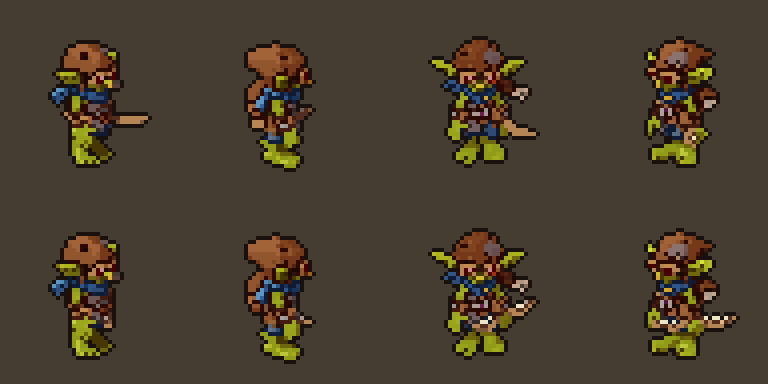
As the game plays it, at game size (enlarged 4×). Top: before. Bottom: now. South-east, east, south, south-west.
One jump is left at the start. The game gives the archer a 1 second wind-up, shorter than the clip's own raise and draw, so the clip starts partway in and the goblin is already half turned. Fixing that means a longer archer wind-up (a gameplay change) or starting the draw while it's still lining up its shot.
12 or 24 frames a second?
Every clip is rendered at 12 frames a second, the usual rate for pixel-art sprites: at 32 px most moves shift a pixel or two per frame, and fewer frames read crisper and keep the sheets small. The cost shows on fast moves: a slash's fastest part gets one or two frames, so it jumps instead of sweeping. Here is the hooded raider's Left Slash both ways, in real time.
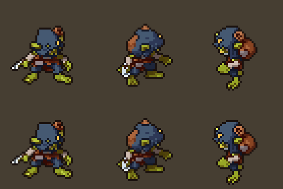
Top: 12 fps (today). Bottom: 24 fps. South-east, east, south-west. 24 fps doubles each goblin's attack rows in the sheet, and costs nothing else (no credits, a few minutes of rendering).
Before that: the whole band, in the game
Your approved pictures went all the way through, unattended: a Meshy model each (made the cheap way, 15 credits), a rig (5) and only the clips their mechanics use (3 each), weapons as small 3D props on the hands, every move rendered in 8 directions at 20° and turned into 32 px pixel art, then packed into one sheet per goblin. 142 Meshy credits in all, under your cap.
Try it: the game on this branch draws the band from these sprites by default, in every room (?sprites=0 brings back the code rigs). The wizard is 1.4× while they're on (it was 1.7× here; you found that too big). The common goblins are the hooded and goggled raiders (two hooded to one goggled), the grabber is the hooker and the brute the chieftain; the imp and the tutorial's straw goblin keep their rigs.
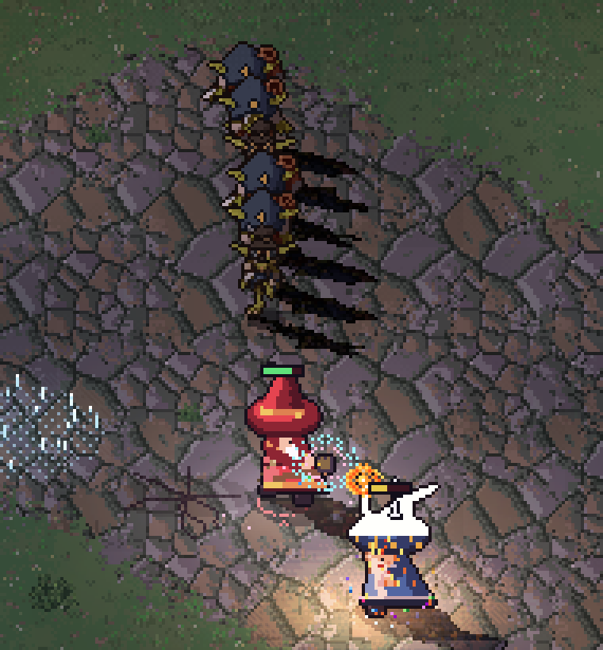
In the arena, the first wave (screenshot, enlarged 2×). Their shadows are longer than the rigs' because they're taller.
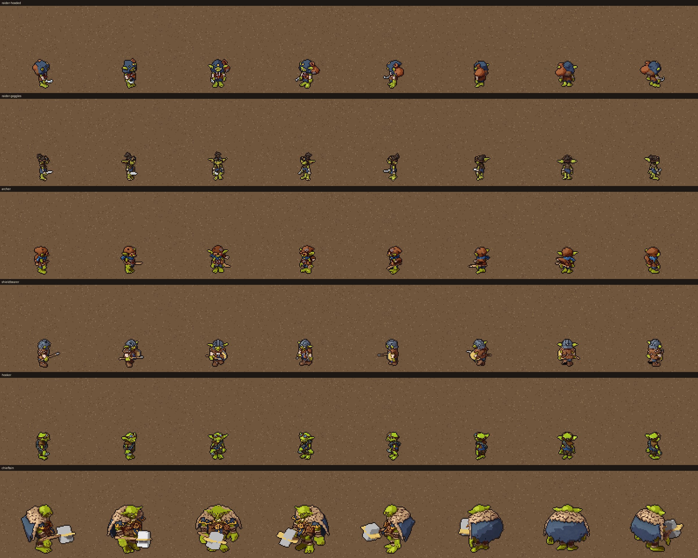
Standing, 8 directions: east, south-east, south, south-west, west, north-west, north, north-east.
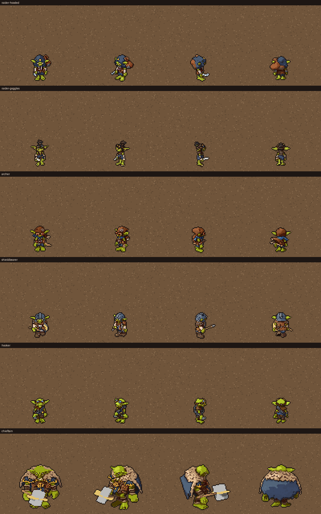
Walk (Meshy's free walk). South, south-west, east, north.
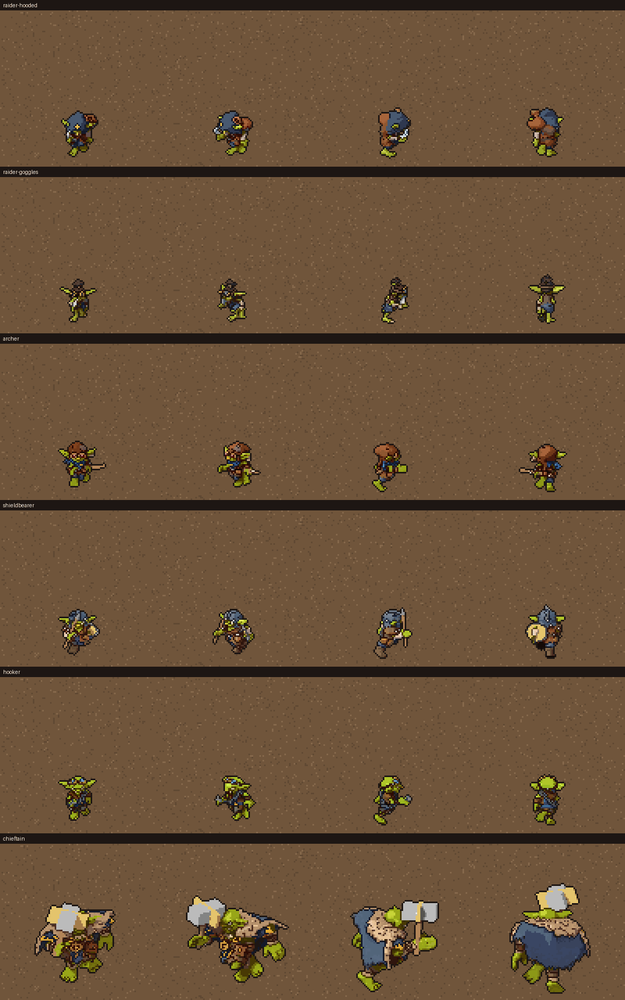
Run: the raiders use Lean Forward Sprint, the rest Meshy's free run.
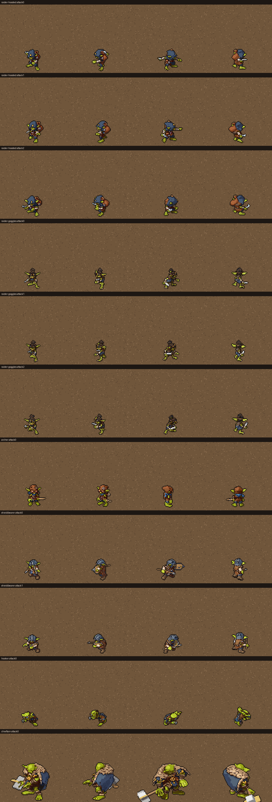
Every attack clip, as rendered. Changed after your note: the game no longer warps them to fit its timings. Each clip plays at its own speed, lined up so the blow lands on the game's hit (a longer game wind-up holds the opening pose a moment; a shorter one starts the clip a few frames in). And a goblin with several attacks picks one afresh for every swing, at random, instead of one for life.
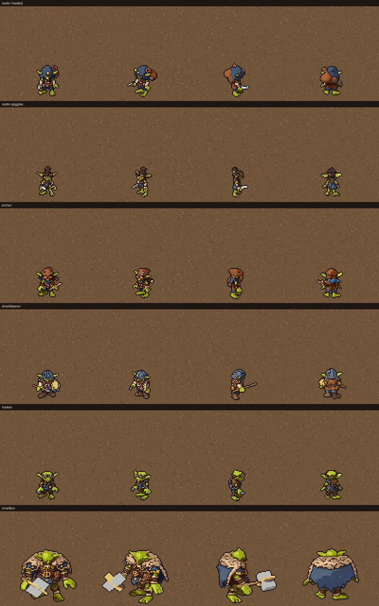
Death: the knock-down; in the game the body then lies still and fades.
What I'd still change: the archer's draw is subtle; the hooker is still a little lime after a colour fix; elemental deaths don't play on sprites yet (your order: roster first). Statuses are a tint for now, and a hit flashes the sprite white.
Before that: the rest of the band, pictures for Meshy
The next step in the roster pipeline: one picture per goblin for Meshy to build a 3D model from. Each is drawn by Codex (free) from its 32 px sprite, matched to the hooded raider's picture so the band shares one build and finish. Hands are empty on purpose: Meshy drops thin things like blades, and a shield held in front would hide the body it has to rebuild. The weapons are drawn separately below and grafted on, like the raider's blade. Worn gear (goggles, helmet, quiver, chain, cape) stays on the body.
An approved picture is what goes to Meshy (about 20 credits each: model 15, rig 5). Mark Redo with a note and I'll draw it again, free.
Weapons
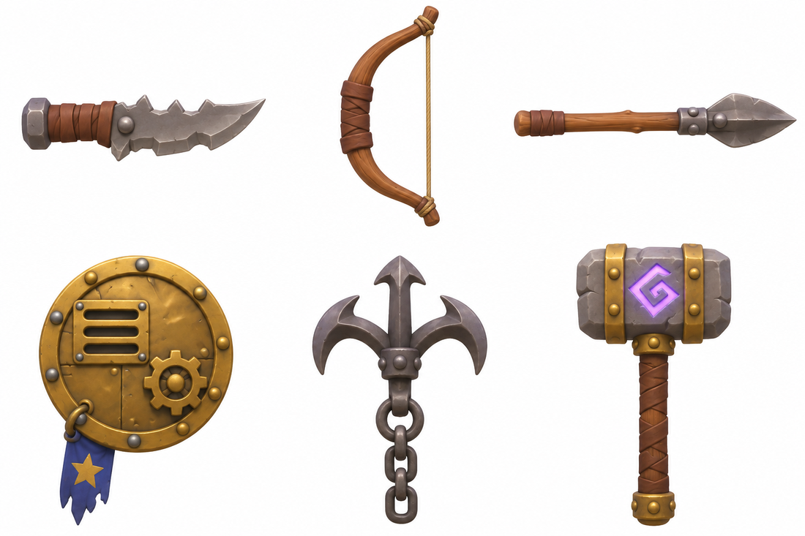
Knife (goggled raider), bow (archer), spear and shield (shieldbearer), hook (hooker), maul (chieftain). Codex can write these as small 3D models for free, as it did the raider's blade. Two things I'd change: the spear is short and stubby, and the maul's rune reads as the letter G.
Before that: Meshy's animator vs my code moves
Same raider, same 20° camera, same pixel pass, blade grafted into the right hand. The difference is who moves it: the top row of each GIF is my code moves on our skeleton, the rows below are Meshy's rig playing clips from its animation library (motion-captured or animator-made). Rigging cost 5 credits, the ten clips 3 each, plus 5 to thin the model first: 40 Meshy credits, signed off.
Walk
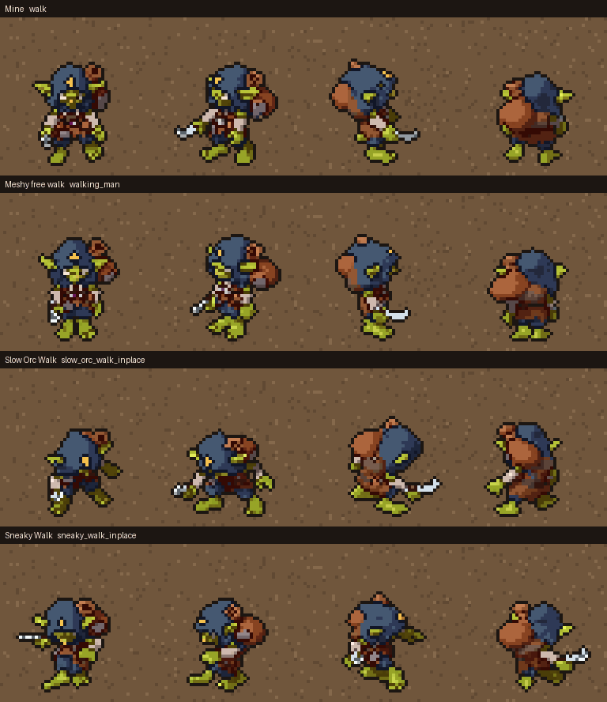
My walk; Meshy's free walk; Slow Orc Walk; Sneaky Walk. South, south-west, east, north.
Run
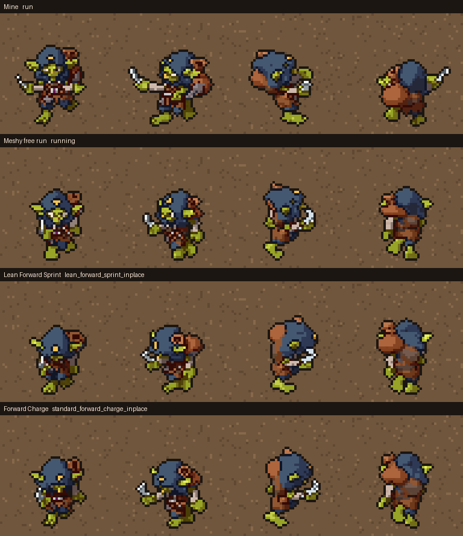
My run; Meshy's free run; Lean Forward Sprint; Standard Forward Charge.
Attack
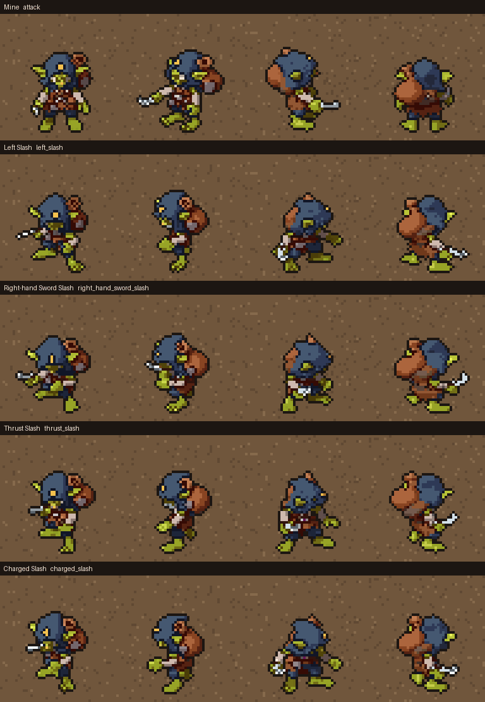
My attack; Left Slash; Right-hand Sword Slash; Thrust Slash; Charged Slash.
Idle and a death
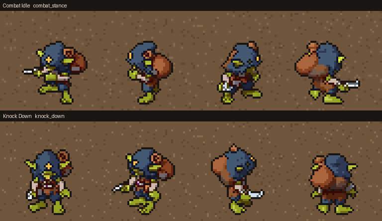
Combat Idle; Knock Down.
What I see:
- Weight: Meshy's slashes have what you asked for: a wind-up, a step in and the whole body swinging through. Left Slash and Thrust Slash are the clearest. Mine are tidier poses but stiffer.
- Length: they're made for 3D games, not for a goblin you have to read and dodge. Left Slash runs 3.2 s, Thrust Slash 3 s; mine is 1.5 s. Playing them faster or cutting the idle ends is free (it's just which frames get rendered), so the length isn't a blocker.
- Readability: the big body turn hides the blade behind the sack for a few frames in some directions. Mine keeps the blade on the outside in every direction, on purpose.
- Run: Meshy's free run is upright; Lean Forward Sprint has the lean you wanted.
- Death: Knock Down is a proper fall in 8 directions for 3 credits, something code deaths can't do and drawn deaths cost a lot for.
- Limits: Meshy only rigs two-legged, human-shaped bodies. Beasts, slimes and constructs would still need our own skeleton and code moves, so both routes stay.
My pick for humanoid enemies: Meshy's clips. Free walk, Lean Forward Sprint, Thrust Slash (or Left Slash) sped up to about 1.5 s, Combat Idle and Knock Down. Code moves stay for everything else. Meshy charges per rigged model (3 credits a clip), but every Meshy rig has the same 24 bones, so I expect these clips to copy onto the next goblin in Blender for free. That's untested. The next step tests it: a second goblin made the cheaper way (15 credits to make, 5 to rig), with these clips copied on.
Before that: how high the camera sits for characters
You noticed PixelLab draws the goblin closer to face-on than our renders. That's normal: most 2D games with a high camera draw characters lower than the ground, because faces and fronts read better, and nobody notices the mismatch. A 3D render can pick any height for free. Here is Meshy's raider at the game's 30 degrees, at 20 and at 10.
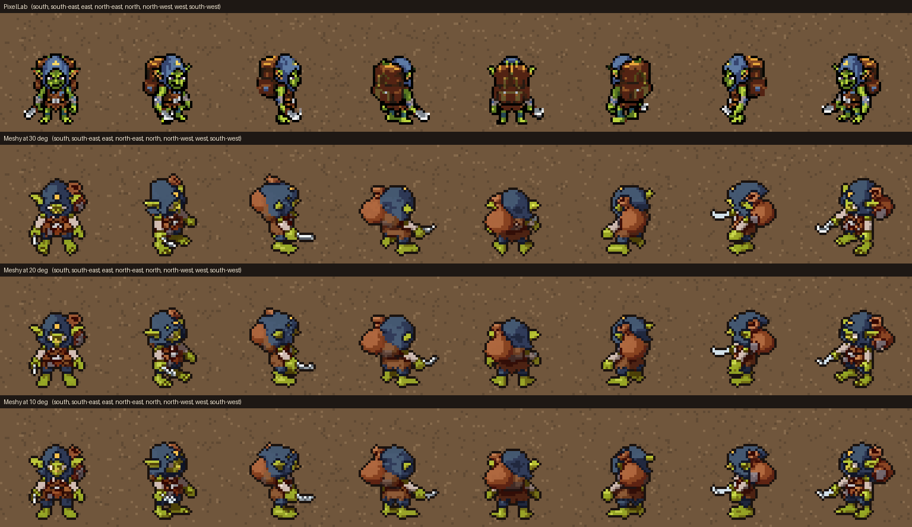
Top: PixelLab. Then Meshy at 30, 20 and 10 degrees. South, south-east, east, north-east, north, north-west, west, south-west.
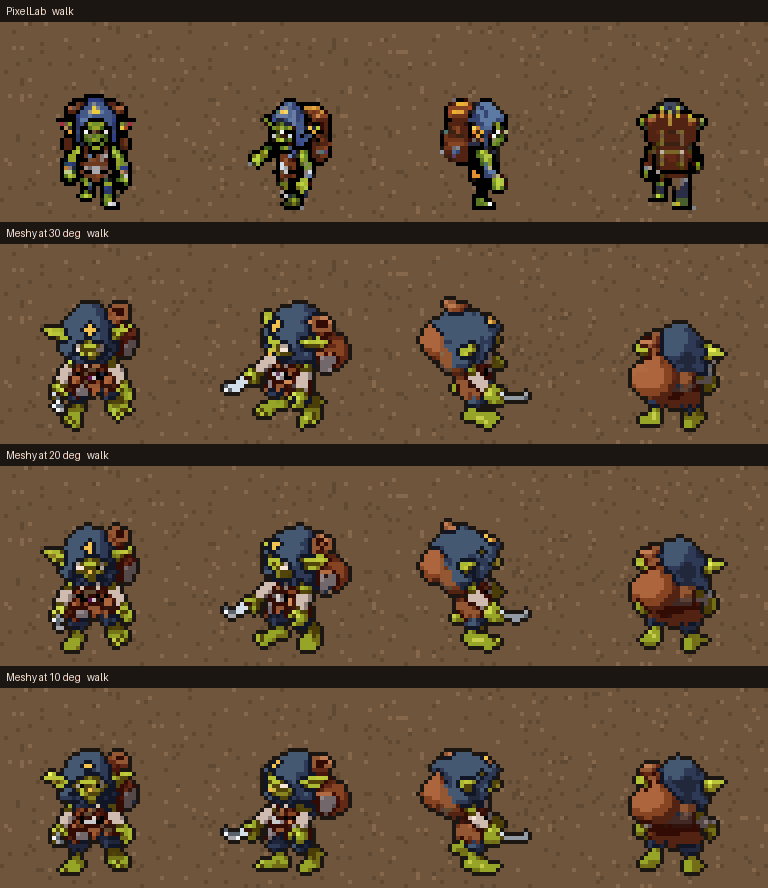
Walk.
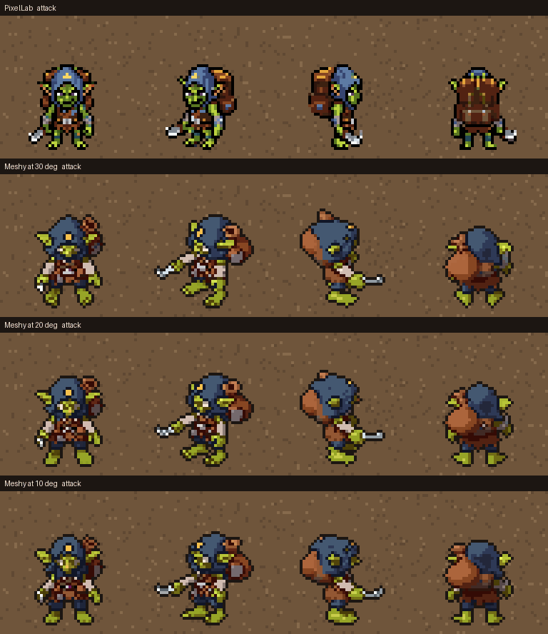
Attack.
At 30 the hood and the sack take over and the face is a sliver. At 10 the face, eyes and legs show, and it sits closest to PixelLab's proportions; it also stands about 3 px taller. The cost: the lower the angle, the more a character looks stood up on the ground rather than seen from above, which shows most where it meets the ground (its shadow and feet). My pick: 15 to 20, checked in the battery scene before it's settled.
The raider from 3D models, round 2
Paying per frame can't keep up with a warband a day, so this path makes an extra move, direction or retake cost nothing. A 3D model goes on a shared goblin skeleton, code poses it, and every frame is rendered from the game's camera in 8 directions and turned into pixel art. No credits spent.
Round 2 drops Claude's model (you found it poor) and adds Meshy's, made from Codex's front-view picture. Meshy dropped the blade, so Codex's blade is grafted into its right hand. Its proportions and pose differ from the skeleton's (lower hips, arms out at 50°), so its joints are fitted to it once, in a small file beside the model.
Standing, 8 directions
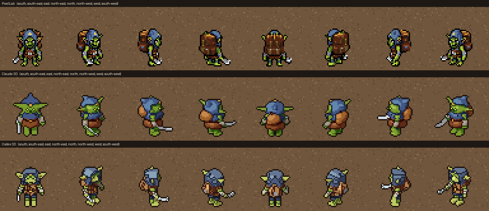
Top: PixelLab. Middle: Codex's model. Bottom: Meshy's. South, south-east, east, north-east, north, north-west, west, south-west.
Meshy's is the closest to PixelLab: chunky, with the face, the star and the sack reading at this size. Codex's is cleaner but thinner. One try each, so this says little about how steady either source is; the next goblin will tell.
Walk, run, attack, reworked
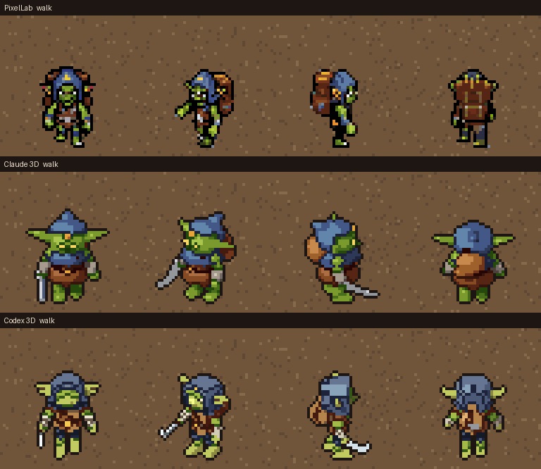
Walk. Rows as above; south, south-west, east, north.
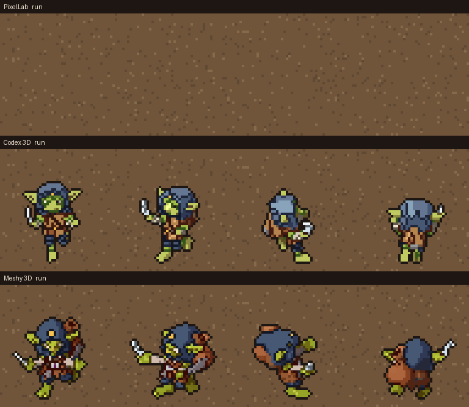
Run (PixelLab has none, so its row is empty).
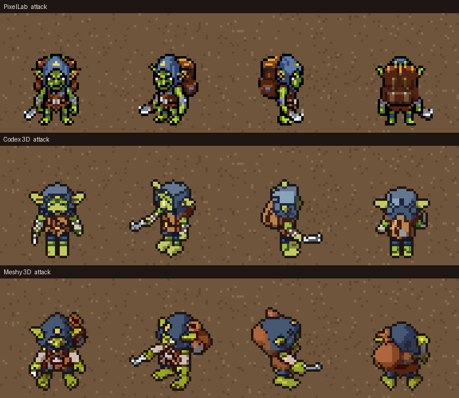
Attack, 14 frames.
What changed after your notes:
- Walk: a slight forward lean; the weight moves over the standing foot, the pelvis drops on the swinging side, and the shoulders turn against the hips.
- Run: a strong forward lean, bigger side-to-side rock, bent arms pumping, a high knee and the heel kicking up behind, and off the ground between steps.
- Attack: anticipation, strike, follow-through. It crouches and coils its body back with the blade cocked high over the right shoulder (visible from every side, as a warning). Then it steps in with the left foot, the hips and shoulders uncoil, and it slashes diagonally across, leaning into the hit. The impact holds for two frames before it recovers.
The moves are code, so the same moves run on every goblin of this build, and the PixelLab glitches can't happen. They're still my poses, not an animator's.
The models themselves
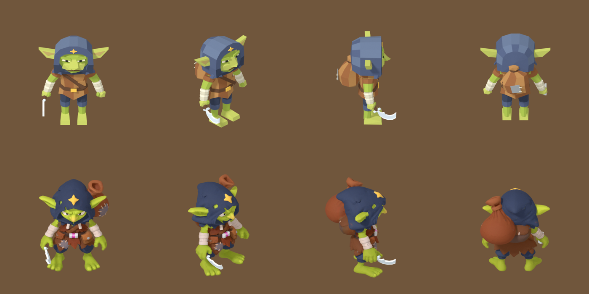
Top: Codex's. Bottom: Meshy's, with Codex's blade.
One goblin in motion (PixelLab)
The hooded raider at 32 px, the most common enemy. Walk and attack from PixelLab (16 generations); deaths two ways, both free.
Walk (PixelLab template, 6 frames)
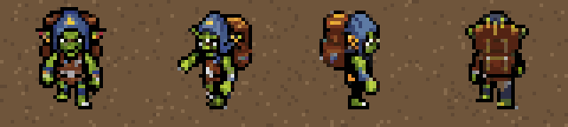
South, south-west, east, north. All eight directions were bought.
It stays the same goblin and the stride reads, but it drops its blade in most directions: the template redraws the body on a skeleton and loses small things it holds. Retrying as a custom walk "holding its curved blade" (8 generations) should keep it.
Attack (PixelLab custom, 9 frames)
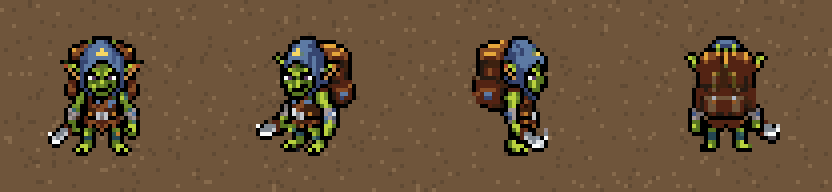
South, south-west, east, north.
The blade stays in every frame, and the overhead wind-up is a clear warning before the hit. East is clean. South and south-west turn to face another way partway through the slash, and north reads weakly; those directions can be redone alone (1 generation each).
Death by code
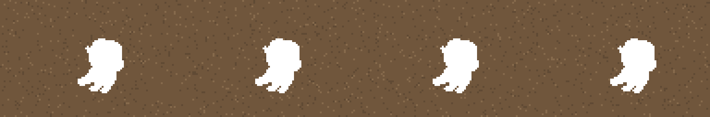
The game's own death styles, run on the sprite's pixels: topple, fire, shatter, arcane.
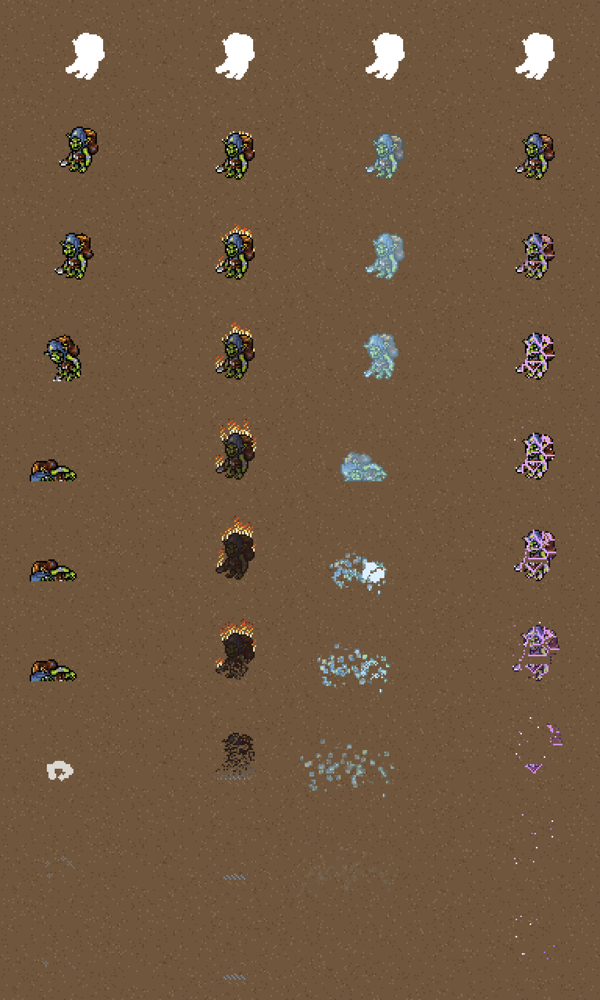
The same, frame by frame (time runs down).
The game already plays these on the code goblins, by painting the rig and animating its pixels. Feeding it the sprite's pixels instead gives every direction and every element for free.
Death by Codex
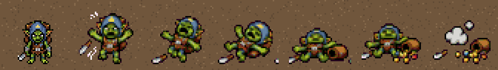
Left: the PixelLab sprite. Then Codex's six frames, converted to game size.
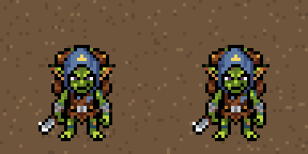
Played beside the sprite.
The most charming: the blade flies, it lands flat, the sack spills coins, a poof. But the goblin drifted rounder and bigger-headed than ours, it's a little bigger, and it faces the camera only.
A smaller chieftain
The 128 px chieftain was out of scale with the band in bulk, not just height. Redrawn at 96 px (3 generations) as the biggest goblin of the band, with the same build: 89 px tall with its maul, against 121.
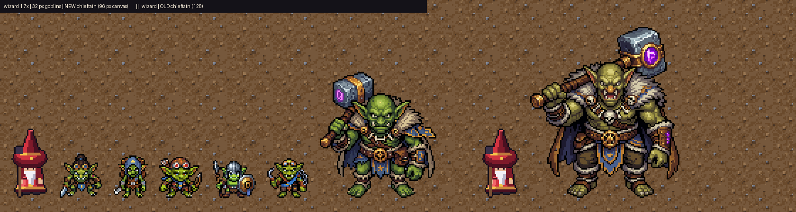
Left: the 1.7× wizard, the 32 px goblins and the new chieftain. Right: the wizard and the old chieftain.
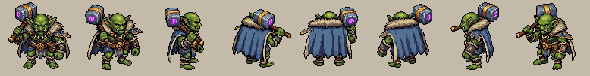
All eight facings. The cape became one big blue academy banner.
Poses so far: every bought goblin has one, standing, in eight directions. Walking, attacking and dying are the animation purchase still to decide.
The same wizard, drawn bigger
Your call: the 32 px goblins are the right scale, and today's wizard (hat, beard, no face) grows to about 50 px. The wizard is drawn by code, so it now has a size switch that scales its shapes, not its pixels: the robe, hat and staff get more pixels, while 1 px details stay 1 px, matching the goblins' density. At 1.7× it's 49 px tall.
The game itself, the battery's stores. Left: today. Right: ?wizscale=1.7. It can look into the chest now.
By the well and the lantern post: the post is about wizard height now.
Same design, more pixels. Top: today. Bottom: 1.7×. Facing the camera, turning, side, back, gathering, casting.
The lineup with the 1.7× wizard. The 32 px goblins come to about 0.6 of its height, as in the concept. The chieftain is about 2.5 wizards tall.
- Try it: add
?wizscale=1.7 to the game's address (any room). It's a switch, not the default yet: until the goblin sprites go in, today's tiny goblin rigs would look odd beside it.
- Only the drawing grows. The wizard's body in the game (what bumps, what gets hit) is the same size, so the drawn wizard is a little wider than its hit area. Worth a look in play.
Before that: size against today's wizard
Where each picture comes from:
- PixelLab: every goblin you'd use, both rounds, the run animation, and the blue wizard below. Round 1 drew them at 64 px, round 2 at 32 px.
- Codex: only the two magenta sheets at the end of round 2, and the two rows marked Codex. Codex was the experiment; it lost.
- The game: the small red-hat wizard and the rig goblins, painted by the game's own code at their true size.
Every row starts with today's in-game wizard (29 px with its hat), all at true relative size. Today's goblins are 15 px: chest height on the wizard. Even the round 2 goblins are as tall as it, and the chieftain is four wizards tall.
So the question is the game's pixel density, not the goblins. Today the game draws a wizard about 29 px tall. All the bought art is drawn at about twice that density. There are two ways to make it fit:
- Keep today's density. Goblins would have to be drawn about 16 px tall and the chieftain about 60. Most of the detail you see here would go.
- Double the game's density. Wizards become 60 px sprites like the one below, and the round 2 goblins and the chieftain fit as they are. The cost: the wizards need real sprites (the code rigs would be redrawn or replaced), the camera shows half as much ground at the same zoom unless it zooms out, and the bought props look small at this size, so they'd need upscaling or redrawing.
The fight at doubled density, everything 1:1: two PixelLab wizards (60 px), the round 2 goblins, the chieftain, and props we own.
 The PixelLab wizard (2 generations), all eight facings at 3×. Bought to show the doubled density; the game still uses its code wizard.
The PixelLab wizard (2 generations), all eight facings at 3×. Bought to show the doubled density; the game still uses its code wizard.
Round 2: PixelLab at 32 px vs two Codex paths
Round 1's goblins were too big next to the props, so round 2 redrew them smaller and tried Codex as well. Judged here beside the training-dummy prop; the lineup above compares them with the game's wizard instead.
A: PixelLab, drawn at 32 px (10 generations). B: a Codex sheet of the five, converted to pixel art. C: a Codex turnaround of one raider in eight directions, converted at its own pixel grid. Last row: PixelLab's raider in all eight directions.
- A wins. Crisp silhouettes, bright green skin that stands off the dirt, every prop readable, and the same goblin in every direction.
- B has the best designs but can't shrink. The Codex sheet is drawn with about 100 px of detail per goblin, so at 30 px it turns to mush. Its green was also an illusion: the skin is yellow-olive and only looked green against the magenta.
- C is usable but second. Codex held one goblin through eight directions by itself, which is new. Converted, it's darker and blobbier than A, with tan skin and a strap it invented on the sack.
So the path is PixelLab drawn at the target size, with Codex for design sheets. The two Codex originals are at the end of this section.
 PixelLab, round 2: the set, all facings at 5×. Rows: goggled raider, hooded raider, archer, shieldbearer, hooker. One stray grey cluster under the goggled raider facing south-east can be cleaned for free.
PixelLab, round 2: the set, all facings at 5×. Rows: goggled raider, hooded raider, archer, shieldbearer, hooker. One stray grey cluster under the goggled raider facing south-east can be cleaned for free.
 Codex: the five, facing the viewer (B's source).
Codex: the five, facing the viewer (B's source).
 Codex: the hooded raider in eight directions (C's source).
Codex: the hooded raider in eight directions (C's source).
Round 1: PixelLab at 64 px, in a fight
The band on the game's own ground tiles, next to props we already bought (a training dummy, crates, a bush, a banner). This is a picture, not the game: nothing is wired in yet.
Top: as bought. The small goblins are drawn at twice the props' pixel density, so they look oversized and too detailed. Bottom: halved locally to match. The size is right, but the faces turn to mush.
The chieftain already fits: it is drawn at the props' density and stands twice a wizard's height, as the concept asked. The small goblins are the problem. To fit, they need to be drawn at about 30 to 36 px tall, not shrunk afterwards.
Round 1: drawn small vs shrunk
 Left to right: the dummy, the 64 px raider halved locally, the same raider generated at 40 px (2 generations), and the chieftain.
Left to right: the dummy, the 64 px raider halved locally, the same raider generated at 40 px (2 generations), and the chieftain.
Generated small is clearly better: chunky shapes, a readable face, blade and sack. Two things to fix in a redo: its skin came out tan instead of green, and at 36 px it stands as tall as the dummy, while the concept has raiders at about 0.6 of a wizard's height. A 32 px canvas would fit better.
Round 1: what came back (PixelLab)
 All eight facings at 2×. Rows: goggled raider, hooded raider, archer, shieldbearer, hooker, chieftain (128 px canvas; the others are 64 px).
All eight facings at 2×. Rows: goggled raider, hooded raider, archer, shieldbearer, hooker, chieftain (128 px canvas; the others are 64 px).
Mark each: Keep the design, Redo it, or Cut it. "Keep" means keep the look; the small ones would still be redrawn at the right size.
Motion test (PixelLab, round 1)
One bought animation before buying more: the hooded raider's template run, 6 frames, all eight directions (8 generations).
 South-west, south, east, north.
South-west, south, east, north.
- It stays the same goblin in every frame. The blade and sack hold their shape instead of morphing.
- The stride is short; it reads as a jog more than a sprint.
- Facing east, the blade hides behind the body for half the cycle. North frame 1 has a stray 3-pixel fragment at the feet.
The brief
 The concept sheet from the opening's encounters. Inspiration only; the archer's board is a separate prop in the game.
The concept sheet from the opening's encounters. Inspiration only; the archer's board is a separate prop in the game.